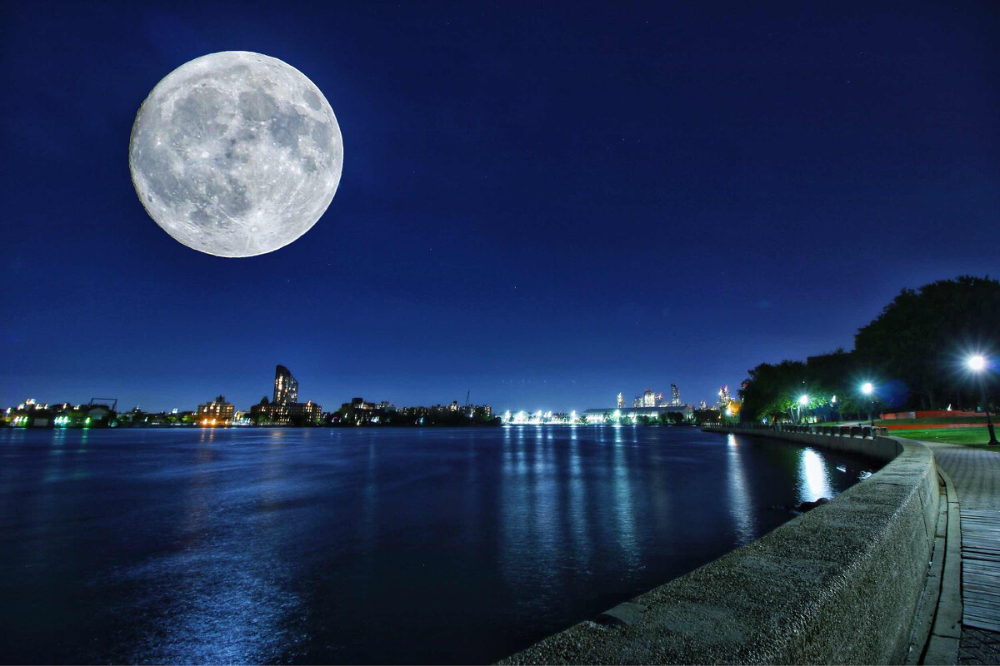
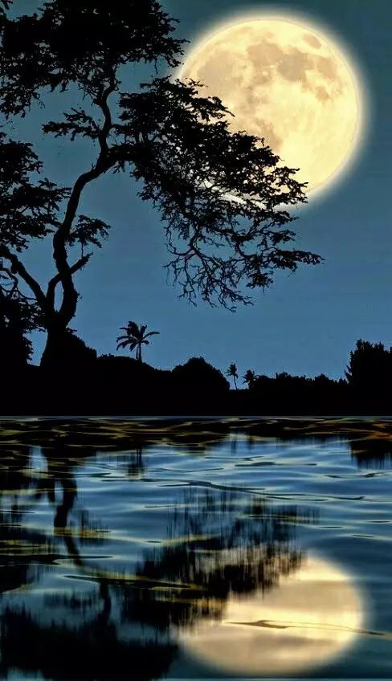

中秋节是上古天象崇拜--敬月习俗的遗痕。在二十四节气"秋分"时节，是古老的"祭月节"，中秋节则是由传统的"祭月"而来。在传统文化中，月亮和太阳一样，这两个交替出现的天体成了先民崇拜的对象。中秋节庆源自古人对月亮的祭祀，是中华民族祭月习俗的遗存和衍生。祭月，在我国是一种十分古老的习俗，实际上是古时代我国一些地方古人对"月神"的一种崇拜活动。据考证，最初"祭月节"是定在干支历二十四节气"秋分"这天，不过由于历史发展，后来历法融合，使用阴历(夏历)，所以将"祭月节"由干支历二十四节气"秋分"调至夏历(农历)八月十五。中秋节是秋季时令习俗的综合，其所包含的节俗因素，大都有古老的渊源。
中秋节源自天象崇拜，由上古时代秋夕祭月演变而来。祭月，历史久远，是古代我国一些地方古人对"月神"的一种崇拜活动，二十四节气的"秋分"，是古老的"祭月节"。中秋节普及于汉代，汉代是我国南北各地的经济文化交流融合时期，各地文化上的交流使节俗融合传播。"中秋"一词现存文字记载最早见于汉代文献，成书于两汉之间的《周礼》(世传为周公旦所著，实际上成书于两汉之间)中说，先秦时期已有"中秋夜迎寒"、"中秋献良裘"、"秋分夕月(拜月)"的活动。据记载，在汉代时，又在中秋或立秋之日敬老、养老，赐以雄粗饼的活动。晋时亦有出现中秋赏月之举的文字记载，不过不太普遍，晋时期中秋节在我国北方地区还不很流行。
中秋节成为官方认定的全国性节日，大约是在唐代。唐代时中秋风俗在我国北方已流行。《唐书·太宗记》记载有"八月十五中秋节"。中秋赏月风俗在唐代的长安一带极盛，许多诗人的名篇中都有咏月的诗句。并将中秋与嫦娥奔月、吴刚伐桂、玉兔捣药、杨贵妃变月神、唐明皇游月宫等神话故事结合起，使之充满浪漫色彩，玩月之风方才大兴。唐代是传统节日习俗揉合定型的重要时期，其主体部分传承至今。
北宋时期，中秋节已经成为普遍的民俗节日，并正式定阴历八月十五为中秋节。文学作品中出现了"小饼如嚼月，中有酥和饴"的节令食品。如孟元老《东京梦华录》说:"中秋夜，贵家结饰台榭，民间争占酒楼玩月";而且"弦重鼎沸，近内延居民，深夜逢闻笙芋之声，宛如云外。间里儿童，连宵婚戏;夜市骈阗，至于通晓"。
到了明清时，中秋已成为中国民间的主要节日之一。岁时节日中世俗的情趣愈益浓厚，功利性的拜祭、祈求与世俗的情感、愿望构成普通民众中秋节俗的主要形态。明清两朝的赏月活动，"其祭果饼必圆"，各家都要设"月光位"，在月出方向"向月供而拜"。陆启泓《北京岁华记》载:"中秋夜，人家各置月宫符象，符上免如人立;陈瓜果于庭，饼面绘月宫蟾免;男女肃拜烧香，旦而焚之。"《帝京景物略》中也说:"八月十五祭月，其饼必圆，分瓜必牙错，瓣刻如莲花。……其有妇归宁者，是日必返夫家，曰团圆节也。"
中秋节自古就有祭月、赏月、吃月饼、玩花灯、赏桂花、饮桂花酒等习俗，流传至今，经久不息。中秋节时，云稀雾少，月光皎洁明亮，民间除了要举行赏月、祭月、吃月饼祝福团圆等一系列活动，有些地方还有舞草龙、砌宝塔等活动。发展至今，吃月饼已经是我国南北各地过中秋节的必备习俗。除月饼外，各种时令鲜果干果也是中秋夜的美食。
根据中国的历法，农历八月在秋季中间，为秋季的第二个月，称为"仲秋"，而八月十五又在"仲秋"之中，所以称"中秋"。
中秋节有许多别称:古时有秋分夕月(拜月)的活动，故称"月夕"或"祭月节"。因节期在八月十五，所以称"八月节"、"八月半";因中秋节的主要活动都是围绕"月"进行的，所以又俗称"月节";中秋节月亮圆满，象征团圆，因而又叫"团圆节"。中秋节月亮圆满，家人团聚，出嫁的女儿回家团圆，因此又称"团圆节"、"女儿节"。在广府地区，中秋节俗称"月光诞"。仲秋时节各种瓜果成熟上市，因称"果子节"。侗族称为"南瓜节"，仫佬族称为"后生节"等。
中秋节还被称为"端正月"。关于"团圆节"的记载最早见于明代文学作品。《西湖游览志余》中说:"八月十五谓中秋，民间以月饼相送，取团圆之意。"《帝京景物略》中也说:"八月十五祭月，其饼必圆，分瓜必牙错，瓣刻如莲花。……其有妇归宁者，是日必返夫家，曰团圆节也。"
祭月，在我国是一种十分古老的习俗，实际上是古人对"月神"的一种崇拜活动。在古代有"秋暮夕月"的习俗。夕月，即拜祭月神。自古以来，在广东部分地区，人们都有在中秋晚上拜祭月神(拜月娘、拜月光)的习俗。拜月，设大香案，摆上月饼、西瓜、苹果、红枣、李子、葡萄等祭品。在月下，将"月神"牌位放在月亮的那个方向，红烛高燃，全家人依次拜祭月亮，祈求福佑。祭月赏月，托月追思，表达了人们的美好祝愿。祭月作为中秋节重要的祭礼之一，从古代延续至今，逐渐演化为民间的赏月、颂月活动，同时也成为现代人渴望团聚、寄托对生活美好愿望的主要形态。
中秋月圆夜在公共场所挂着许多灯笼，人们都聚集在一起，猜灯笼身上写的谜语，因为是大多数年轻男女喜爱的活动，同时在这些活动上也传出爱情佳话，因此中秋猜灯谜也被衍生了一种男女相恋的形式。
月饼，又叫月团、丰收饼、宫饼、团圆饼等，是古代中秋祭拜月神的供品。月饼最初是用来祭奉月神的祭品，后来人们逐渐把中秋赏月与品尝月饼，作为家人团圆的一大象征。月饼象征着大团圆，人们把它当作节日食品，用它祭月、赠送亲友。发展至今，吃月饼已经是中国南北各地过中秋节的必备习俗，中秋节这天人们都要吃月饼以示"团圆"。
人们经常在中秋时吃月饼赏桂花，食用桂花制作的各种食品，以糕点、糖果最为多见。 中秋之夜，仰望着月中丹桂，闻着阵阵桂香，喝一杯桂花蜜酒，欢庆合家甜甜蜜蜜，已成为节日一种美的享受。到了现代，人们多是拿红酒代替。
在广东一些地方，中秋节有一种富有情趣的传统风俗，叫"树中秋"。树亦作竖，即将灯彩高竖起来之意，所以也叫"竖中秋"。小孩子们在家长协助下用竹纸扎成兔仔灯、杨桃灯或正方形的灯，横挂在短竿中，再竖起于高杆上，高举起来，彩光闪耀，为中秋再添一景。孩子们多互相比赛，看谁竖得高，竖得多，灯彩最精巧。入夜，满城灯火，如繁星点点，和天上明月争辉，以此庆贺中秋。
中秋节，有许多的游戏活动，首先是玩花灯。中秋是我国三大灯节之一，过节要玩灯。当然，中秋没有像元宵节那样的大型灯会，玩灯主要只是在家庭、儿童之间进行的。早在北宋《武林旧事》中，记载中秋夜节俗，就有将"一点红"灯放入江中漂流玩耍的活动。中秋玩花灯，多集中在南方。如佛山秋色会上，就有各种各式的彩灯:芝麻灯、蛋壳灯、刨花灯、稻草灯、鱼鳞灯、谷壳灯、瓜籽灯及鸟兽花树灯等，令人赞叹。在广西南宁一带，除了以纸竹扎各式花灯让儿童玩耍外，还有很朴素的柚子灯、南瓜灯、桔子灯。所谓柚子灯，是将柚子掏空，刻出简单图案，穿上绳子，内点蜡烛即成，光芒淡雅。南瓜灯、桔子灯也是将瓤掏去而成。虽然朴素，但制作简易，很受欢迎，有些孩子还把柚子灯漂入池河水中作游戏。广西有简单的户秋灯，是以六个竹篾圆圈扎成灯，外糊白纱纸，内插蜡烛即成，挂于祭月桌旁祭月用，也可给孩子们玩。如今两广的不少地区，在中秋夜布置灯会，扎制用电灯照亮的大型现代灯彩，还有用塑料制成的各式新型花灯供儿童玩，但却少了一份旧时灯彩的纯朴之美。
广东潮汕地区中秋节习俗。中秋节当天下午，各家厅里就摆台设祭，置祖先神主牌，献上各色供品。祭毕，把祭品逐样烹调，合家同食一次丰盛晚餐。
舞火龙，是香港中秋节最富传统特色的习俗。从每年农历八月十四晚起，铜锣湾大坑地区就一连三晚举行盛大的舞火龙活动。这火龙长达70多米，用珍珠草扎成32节的龙身，插满了长寿香。盛会之夜，这个区的大街小巷，一条条蜿蜒起伏的火龙在灯光与龙鼓音乐下欢腾起舞，很是热闹。
广东潮汕各地有中秋拜月的习俗，主要是妇女和小孩，有"男不圆月，女不祭灶"的俗谚。当地还有中秋吃芋头的习惯，潮汕有俗谚:"河溪对嘴，芋仔食到"。八月间，正是芋的收成时节，农民都习惯以芋头来祭拜祖先。中秋夜烧塔在一些地方也很盛行。
江南一带的民间在中秋节人习俗也是多种多样。南京人中秋爱吃月饼外，必吃金陵名菜桂花鸭。"桂花鸭"于桂子飘香之时应市，肥而不腻，味美可口。江南妇女手巧，把诗中的咏物，变为桌上佳肴。 南京人合家赏月称"庆团圆"，团坐聚饮叫"圆月"，出游街市称"走月"。
更多内容百度一下